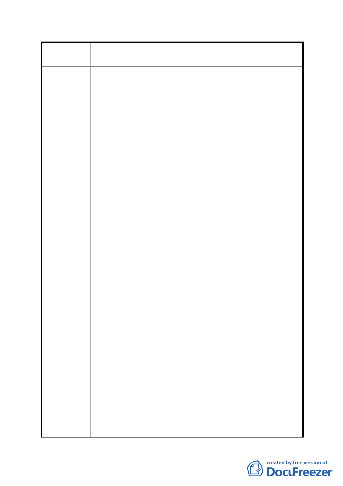

案
名
修訂臺北市「基隆河（中山橋至成美橋段）附近地區土地使
用分區與都市設計管制要點」（北段地區）計畫案
基地容積率為 200%者應達申請基地基準容積之五分之一
以上，基地容積率為 250%以上者應達申請基地基準容積
之四分之一以上，其餘樓層得比照臺北市土地使用分區
管制規則第三種商業區之規定辦理，並刪除不准許住宅
使用之規定，以貼近實務並避免違規使用之發生。
3. 未適用綜合設計放寬規定者，並無最小法定建蔽率之適
用。
二、土地使用強度：
1. 若規範最小建蔽率，於引用綜合設計放寬獎勵之規定
時，將影響建築設計彈性與開放空間品質。
2. 經分析於引用綜合設計放寬獎勵之規定時，若最小建蔽
率須＞40%時，並扣除不屬建蔽率之陽台、雨遮、車道等
（約占 10％），再扣除後院或側院等不得計入之開放空
間之空地面積，即難以設計足夠之開放空間有效面積，
而無法爭取適用百分之二十之法定容積獎勵。若扣除不
得計入開放空間有效面積之空地＞10%時（如單面臨路之
基地，須扣除鄰棟間隔及最小後院等），則開放空間面積
佔基地面積比例即小於 40%，而無法適用綜合設計放寬
獎勵。
三、建築物立面寬度規定：
1.本計畫、臺北市土地使用管制規則及建築技術規則已有相
關之建築物高度比、後院深度比、北向日照線及面前道路
陰影線等限制，已考量鄰地日照權之情形。
2.應尊重每塊建築基地之特色及使用需求。
3.本項規定將嚴重影響建築設計創意與合理性。
4.規定建築物立面寬度不得大於土地細分規模東西向境界
線長度之三分之一，較易造成建築物造型設計之正面性不
足，對面向基隆河及山景側之都市景觀不利。
四、開發許可(三)：
1.面臨計畫道路可獨立經營之店面、美容健身業及一般事務
- 79 -